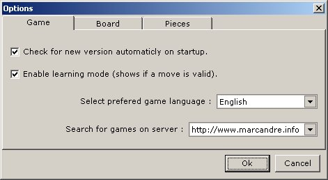

AlphaChess 3
For more information please visit my website http://www.marcandre.info
or write to me at marc@marcandre.info
Copyright ©2003-2005 Marc-andre Lamothe.
Clickez ici pour la version française
- Introduction
- AlphaChess
- Conclusion
1. Introduction
1.1 Description-
AlphaChess is a superb chess game that allows you to challenge other players
either in a local game (two players on one computer) or a network game.
AlphaChess has a unique, fully customizable game board, you can change every single
color it uses, the game comes with 10 color themes and you can also easily add or
remove your own themes. You can also choose within 20 chess sets to use.
1.2 Historique-
This software started has a school Java programing project and by the end of the
course when it was finished it went beyond the requirements of the course itself,
trying to become a real chess program. But still it wasn't complete and during
the 2003 summer work started on creating a real chess game. For that purpose
the entire code was re-written from java to pascal and in july 2003 the first version
was completed.
Then work began on adding networking support and only a few weeks later
version 2 was completed. But even after alot of fixes alot of bug and crashes
happened while playing a network game. It was a year later after the last changes
to version 2 that started the work on version 3, in wich the entire network connection
code was isolated and re-written. And finally, december 2004, version 3 was
completed, using a much stable network core and alot of new features and functionnality.
2. AlphaChess-
AlphaChess is one of the best online chess program, with its sleek and
simple graphical interface and intuitive game play makes it the easiest to play.
2.1 Interfaces
2.1.1 Game board-
This is AlphaChess's maine window and game board :
To start playing you simply have to click on the Game menu and on
"Play a local game" or on "Play an online game". Left of the game board you can
see the status panel wich will display information about the game like the player's
names, the time since the beginning of the game, the notification zone (wich displays
a move's result, if any) aswell has the moves history.
To make a move, simply selecte a piece by clicking on it (then the case's color will
to show it was selected) after simply click on the case where you want the
piece to be to make the move. You can also make a move by dragging the piece if you
hold down the mouse button and release it over the destination case to drop the piece.
The cases of the game board will change color when you select a piece to move or
when move you mouse cursor over them, When a piece is selected to be moved, the color
of the case where you move your cursor will change to show if that move is allowed
or not, but only if the "Learning mode" has been activated in the options. You can
also specify the color to show at each moment in the options.
While in a game it is possible to take back a move you did by clicking on
the Game menu and on "Undo last move", you can also pause or forfeit the
game in the same menu. In the View menu you can switch the game board view wich will
turn the board arround to show yours opponent's view, you can also open up the
chat window to talk to your opponent, and the games history to show the result of the
games you have played.
2.1.2 Options-
Here is the option window of AlphaChess :

In the Gam tab you activate the auto-update feature that looks for new version on
startup, you can also enable the "Learning mode" wich will show you if a move is valid
or not by changing the color of the board cases.
You can also choose in wich language you would like AlphaChess to be displayed.
For now only french or english are availlable, but others may be added to this list.
It is also possible to choose the game server to connect to when looking for online
games. There is only one server availlable for now, so this option should always show
http://www.marcandre.info. If when you try to play an online game and error comes up
saying that it is impossible to connect to the game server, you should make sure that
this option shows the right server first.
In the board tab you can change the colors of the game board and the color of
the cases shown in each of their state. It also is possible to choose wich case style
to display the board with, the Classic style will display the cases one next to the
others (without borders or gap), the Enhanced style will show a gap in between every
cases aswell as a border for each of them (the previous image shows the Enhanced one).
With schemes you can easily change all of the colors of the game board and it's
cases just by selecting a scheme from the list. To add your own scheme, simply type
the desired name in the scheme field and click on Save, if a scheme of the same name
already exist, a message will ask you if you wich to replace it with the new one. To
remove a scheme from the list, simply select it and then click on the Delete button.
In the Piecse tab you can choose wich chess set you would like to use, 20 sets
are included with the game. Since version 3.0.6, it is not possible anymore
to add in your own chess sets, but you can now change it's color. The Display mode
allows you to choose between the Standard mode, wich displays all the pieces in their
original color (black and white), or the Colored mode witch allows you to choose
the color of the pieces for both players.
Note that the Colord mode always displays the pieces with a black border and that
only the fill in color will be changed, so it is not recommended to choose dark colors
or to put the same color for both players.
2.2 Multiplayer-
AlphaChess is a multi-player only chess game, wich means that you can only play
against another player, either by playing localy on one computer or by playing
online with two computers.
2.2.1 Local game-
To play a local game (two players on the same computer), you simply have to click
on "Play a local game" in the Game menu, then enter the name of both players and
click on Ok to start playing right away.
2.2.2 Network game-
To play an online game (play against a player on another computer), click on
"Play an online game" in the Game menu, then enter your name and choose wich type
of game you wish to play, you can join a selected game in the list, join a game
at a specific address or create a new online game.
If you choose to join a selected game in the list, you simply have to select the
availlable game from the list and to click on Ok. If the list is empty, then this
means that no game is availlable or that one has created an online game yet. If
an error message shows up saying that it is impossible to access the game list on
the server, then this means thats you are not connected to the internet or that
the wrong game server has been selected in the options.
If you choose to join a game at a specific address, then you have to type
the IP address of the computer on wich an online game was created.
If you choose to create an online game, all you have to do is choose as wich
player you want to play. The white player is always the one that make the first move.
To be able to create an online game you need to have direct access to the internet,
if your internet access is shared between other compputers with a router or another
computer, it wont be possible for people to join the game that you have created,
unless you configure the router to forward the TCP data it receives on port 2570
to your computer, but to do so your computer need to have a specific IP address on
your home network. For more information on how to do all that, contact your computer
technician.
3. Conclusion-
AlphaChess is the perfect chess game to have fun and challenge your friend
where ever in the world they may be, either if you are novice or expert.
For any other information, question or comments, to can write to me at :
marc@marcandre.info.
Thanks for using AlphaChess.
|